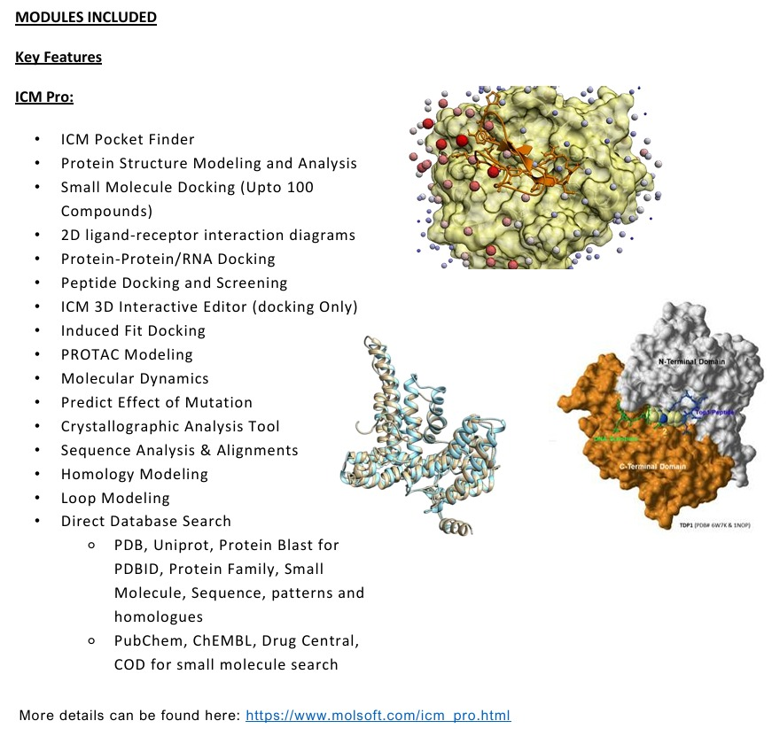

Pioneering solutions at the confluence of Artificial Intelligence, Computer Vision, and Industry 4.0 with over 22 years of combined industry, academic leadership, and high-impact research. Former Academic Department Head and Senior Research Fellow at IIT Delhi, now architecting resilient enterprise technology at Infosys Ltd.
Bridging the gap between cutting-edge academic innovation in artificial intelligence and enterprise-scale software architecture.
Dr. Tushar Jain is an accomplished Senior Tech Specialist at Infosys Ltd (Hyderabad), researcher, and former academic leader with over 22 years of blended experience across software engineering, applied artificial intelligence, university teaching, and sponsored research.
He earned his Ph.D. in AI Computer Vision Systems for Object Recognition from the esteemed National Institute of Technology (NIT) Kurukshetra in 2019. Further strengthening his computer science foundations, he completed his M.Tech in Computer Science & Engineering (Honors with 85%) from the School of ICT, GGSIPU Delhi in 2024, alongside an earlier M.Tech in AI Expert Systems (9.33 CPI) under the mentorship of Prof. S. N. Gupta (Ex-HOD, IIT BHU).
Throughout his distinguished career, Dr. Jain has spearheaded multiple government-sponsored modernizations and innovations, including AICTE MODROBS grants totaling ₹36,00,000/- and a BIRAC COVID-19 healthcare research project. He served as a Senior Research Fellow (SRF) in the Pattern Analysis and Recognition (PAR) Lab at IIT Delhi under Prof. Sumantra Dutta Roy, and led university departments as Head of Department (HOD) for several tenures.
Mechanical CAD object recognition, edge extraction, active vision, boundary detection.
Deep neural networks, pattern classification, expert systems, LLMs & applied ML.
Smart manufacturing, automated optical inspection, cyber-physical automation systems.
ERP SAP, scalable distributed cloud solutions, and mission-critical systems at Infosys.

Exploration of multi-domain 3D structural analysis, pocket identification, surface matching, and automated vision algorithms for industrial manufacturing and biotechnology pipelines.
Leading enterprise transformation at Infosys while carrying forward an enduring legacy of academic stewardship and scientific research.
Driving cutting-edge enterprise architecture, artificial intelligence initiatives, and high-performance engineering implementations across mission-critical client projects.
Educated and mentored undergraduate and graduate students in computer science, machine learning, and advanced software algorithms while continuing research publications.
Served over 17 years in faculty and leadership roles, including two terms as Head of Department (2012–2014 & 2020–2021). Directed academic curricula, faculty development, NBA/NAAC accreditations, and secured major government grants.
Conducted advanced doctoral research in the Pattern Analysis and Recognition (PAR) Lab under the supervision of Prof. Sumantra Dutta Roy, Professor, Department of Computer Science & Engineering, IIT Delhi.
Rigorous academic training from premier Indian technical institutions with distinctions and honors across all degrees.
Thesis: "AI Computer Vision System for Objects Recognition" (Mechanical Engineering Dept / Computer Vision).
Graduated with First Class Honors (85%), focusing on advanced algorithms, deep learning, and cloud infrastructure.
Graduated with 9.33 CPI under supervision of Dr. S. N. Gupta (Ex-Professor & Head, IIT BHU Varanasi).
First Class with Honors (81.07%), with core specialization in computer architectures, software engineering & databases.
Graduated with First Class Honors (80.03%).
Supervised by Prof. Sumantra Dutta Roy (CSE Department) on automated CAD parts active vision recognition.
Over ₹36 Lakhs secured in competitive national research grants from AICTE, BIRAC, and government research bodies.
Modernized cutting-edge CAD/CAM infrastructure to foster advanced computational geometry, reverse engineering, and machine vision research.
Upgraded automotive research equipment and computerized engine test benches for advanced thermal and transient analysis studies.
Designed and developed an economical and reusable aspirator shield to safeguard frontline medical healthcare workers during the pandemic.
Organized intensive faculty development training on intelligent robotics, machine vision, and industrial automation at MIET Meerut.
Convened a state-sponsored training workshop training 100+ university professors in smart factory architecture and edge AI integration.
Organized high-impact international conferences with IEEE/IEI indexation, convening world researchers in emerging engineering technologies.
Published in leading journals including Emerald Publishing UK, Springer Nature, Elsevier, and IEEE/IOP indexed proceedings.
Sharing expertise with academia and industry, serving as session chair, reviewer, and university examination superintendent.
Distinguished certifications from premier global universities, IITs NPTEL elite diplomas, and IIM executive programs.
Comprehensive toolset spanning deep machine learning, computer vision, enterprise architecture, and academic governance.
Eminent professors and institute directors who have supervised and collaborated on Dr. Jain's research journey.
Available for enterprise AI consulting, guest lectures, conference keynotes, joint research, and technical leadership discussions.